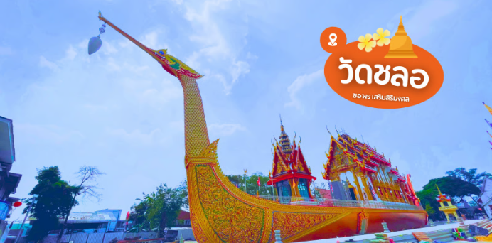
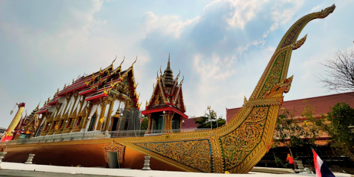
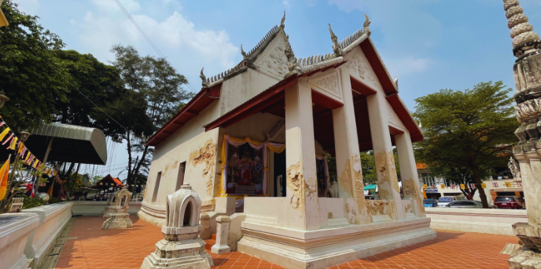
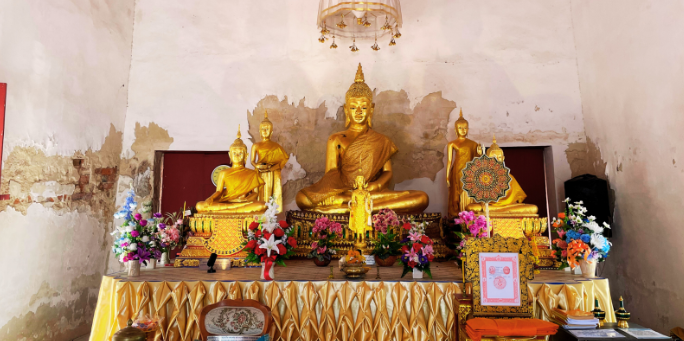
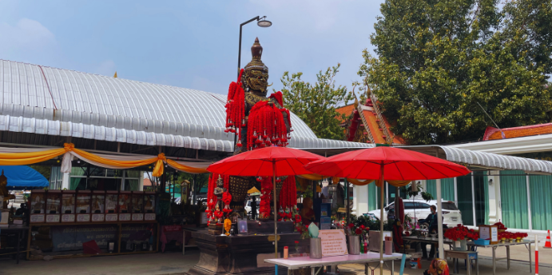
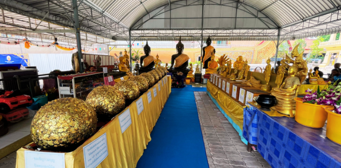
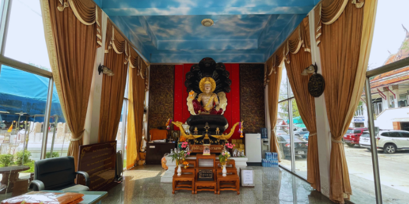

วัดชลอ

วัดชลอ ตั้งอยู่ตำบลวัดชลอ อำเภอบางกรวย จังหวัดนนทบุรี ริมถนนบางกรวย-ไทรน้อย สร้างขึ้นสมัยอยุธยา จุดไฮไลท์ของวัดนี้ คือ อุโบสถบนเรือสุพรรณหงษ์ ขนาดใหญ่ ตั้งเห็นเป็นสง่า ตั้งแต่เข้ามาในวัดเลยค่ะ นอกจากนี้ยังมีอุโบสถเก่าแก่กว่า 200ปี

เรือสุพรรณหงษ์สร้างเป็นสีทอง เด่นสง่า โบสถ์เรือสุพรรณหงษ์ สร้างเมื่อ พ.ศ. 2526 จนปัจจุบัน พ.ศ.2567 ได้บูรณะโบสถ์เรือสุพรรณหงษ์ใหม่

อุโบสถหลังเก่า สร้างเมื่อ พ.ศ.2300 เป็นอาคารขนาดใหญ่ ก่ออิฐถือปูนอยู่ในผังสี่เหลี่ยม อุโบสถลักษณะทรงไทยรูปเรือสำเภาโบราณ มีความขลังและศักดิ์สิทธิ์มาก


นอกจากนี้ยังมีท้าวเวสสุวรรณ ปิดทองลูกนิมิต องค์จตุคาม และสิ่งศักดิ์สิทธิ์อีกมากมาย


วัดชลอ เป็นอีกหนึ่งวัดสวย จังหวัดนนทบุรี โบสถ์เรือสุพรรณหงษ์ สวยสง่างาม โบสถ์เก่าแก่